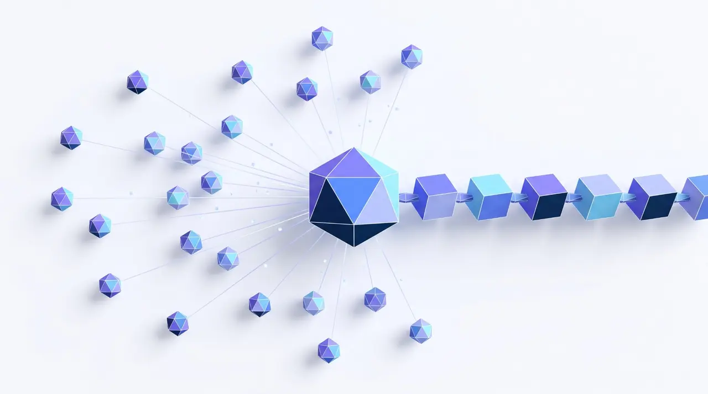

K8X
Задача
Запустить маркетинг с нуля и построить систему, которая приводит пользователей, усиливает бренд и помогает B2B-продажам
Результат
- Регистрации +20–40% каждый месяц, март–сентябрь 2026
- Топ-15 мировых майнинг-пулов по данным MiningPoolStats
- Сообщество 2000+, активный чат 750+
Что сделала и деталиСвернуть: кейс K8X
На старте не было ничего: ни стратегии, ни контент-маркетинга, ни сквозной аналитики, ни комьюнити, ни процессов работы с подрядчиками
Что сделала
- Разработала стратегию, позиционирование, CJM и аналитику
- Собрала с нуля команду и подрядчиков: редакция и SMM, реклама, PR и SERM, видеопродакшн
- Запустила Telegram-канал и сообщество
- Вывела компанию в медиа: 30+ экспертных публикаций в месяц (VC, РБК)
- Автоматизировала внутренние процессы с ИИ
Ещё сделала
- PR руководителей в федеральных и отраслевых СМИ («Известия», TechInsider, «Генеральный директор», BeInCrypto)
- Презентации для B2B-продаж и архитектуру нового сайта
- Партнёрские коллаборации и работу с блогерами
- Исследование и упаковку нового продукта
Ещё результаты
- Новый продукт готов к запуску
- Часть рутины автоматизирована с ИИ: таблицы, статьи, ресёрч новостей